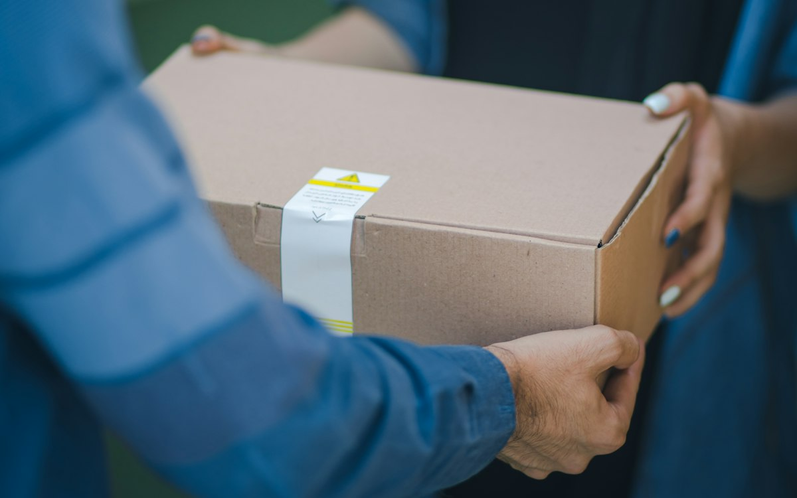

Paket Başı mı, Vardiyalı Kurye mi? İşletmenize Uygun Modeli Seçin
Kurye hizmeti alırken en çok sorulan soru, hangi ödeme modelinin daha ekonomik olduğu. Paket başı, vardiyalı ve işletmeye özel kurye modellerini ve kendi rakamlarınızla yapabileceğiniz basit hesabı anlattık.

Kurye hizmeti almaya karar verdiğinizde karşınıza genellikle üç model çıkar: paket başı, vardiyalı (saatlik) ve işletmeye özel kurye. Hangisinin daha ekonomik olduğu sorusunun tek bir cevabı yoktur; cevap, sizin sipariş sayınızda ve siparişlerin gün içindeki dağılımında saklıdır.
Paket başı kurye nedir?
Paket başı modelde yalnızca teslim edilen paket kadar ödeme yaparsınız. Sipariş yoksa maliyet de yoktur. Bu model özellikle şu işletmelere uygundur:
- Günlük sipariş sayısı düşük ya da günden güne çok değişen işletmeler
- Paket servise yeni başlayan ve talebi henüz oturmamış işletmeler
- Siparişleri gün içine dağınık gelen marketler, eczaneler ve çiçekçiler
Dezavantajı, sipariş sayısı arttıkça toplam maliyetin de doğrusal olarak artmasıdır. Belli bir hacmin üzerinde vardiyalı model daha avantajlı hâle gelebilir.
Vardiyalı (saatlik) kurye nedir?
Vardiyalı modelde belirlediğiniz saatlerde, belirlediğiniz sayıda kurye işletmenizde hazır bekler. Ödeme, teslim edilen paket sayısından bağımsız olarak saat üzerinden yapılır. Bu model şunlar için idealdir:
- Öğle ve akşam yemeği gibi yoğun saatleri belli olan restoranlar
- Yoğun saatlerde siparişin kapıda beklemesini istemeyen işletmeler
- Kuryenin işletmede hazır bulunmasının hız kazandırdığı durumlar
İşletmeye özel kurye nedir?
İşletmeye özel modelde size atanmış, işletmenizi ve müşterilerinizi tanıyan sabit bir kurye ekibi çalışır. Kuryelerin istihdamı, sigortası ve ekipmanı yine kurye firmasındadır; siz ise kendi kadronuz varmış gibi düzenli bir ekiple çalışırsınız. Sipariş hacmi yüksek ve istikrarlı olan, marka deneyimine önem veren işletmeler için uygundur.
Hangisi daha ekonomik? Başa baş noktasını hesaplayın
Paket başı ile vardiyalı model arasındaki seçimi yapmanın en pratik yolu, başa baş noktasını bulmaktır. Bunun için iki rakama ihtiyacınız var: size teklif edilen paket başı ücret ve saatlik kurye ücreti.
Bu sayı, bir kuryenin bir saatte kaç paket taşıması durumunda iki modelin aynı maliyete geldiğini gösterir.
Yoğun saatlerinizde bir kurye saatte bu sayıdan daha fazla paket taşıyorsa vardiyalı model daha ekonomiktir. Daha az taşıyorsa paket başı model avantajlıdır. Hesabı yaparken şunlara dikkat edin:
- Saatlik paket sayısını tüm gün değil, her saat dilimi için ayrı hesaplayın. Öğle saatinde vardiyalı, ikindi saatinde paket başı daha uygun olabilir.
- Teslimat mesafesi uzadıkça bir kuryenin saatte taşıyabileceği paket sayısı düşer.
- Paketin kapıda beklediği süre de bir maliyettir; soğuyan yemek ve iptal edilen sipariş hesaba katılmalıdır.
Hibrit model: ikisinin en iyisi
Pek çok işletme için en verimli çözüm, modelleri birleştirmektir: yoğun saatlerde vardiyalı kurye, sakin saatlerde paket başı destek. Böylece hem yoğun saatte hız kazanır hem de boş geçen kurye saatine ödeme yapmazsınız.
| Durum | Önerilen model |
|---|---|
| Günlük sipariş düşük veya düzensiz | Paket başı |
| Yoğun saatler belli, o saatlerde sipariş yüksek | Vardiyalı / saatlik |
| Gün boyu yüksek ve istikrarlı hacim | İşletmeye özel kurye |
| Yoğun saatte yüksek, kalan saatlerde düşük hacim | Hibrit (vardiyalı + paket başı) |
Sonuç
Doğru kurye modeli, işletmenizin sipariş düzenine uyan modeldir. Son birkaç haftanın siparişlerini saat dilimlerine ayırın, başa baş hesabını yapın ve gerekirse modelleri birleştirin. Hizmet modellerimizi inceleyerek başlayabilirsiniz.